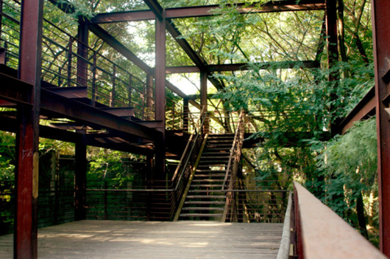
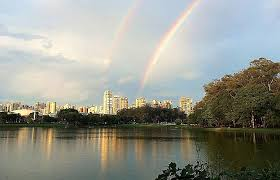

Parques em São Paulo
Para você que gosta do contato com a natureza aqui estão algumas dicas de parques!!!
Paque da Juventude:
Zona norte, próximo a estação de metrô Carandiru

Parque Ecológico do Tiete:
Zona leste e próximo a estação de trem USP Leste

Parque Ibirapuera:
Localizado na zona sul, Vila Mariana

Parque Vila Lobos:
Localizado na Zona Oeste, Alto de Pinheiros